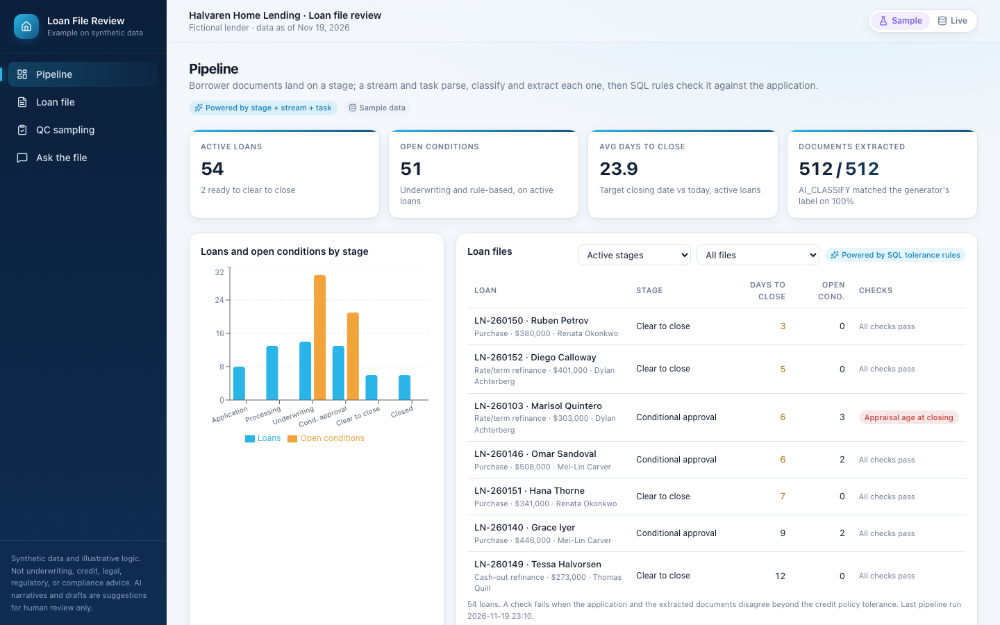
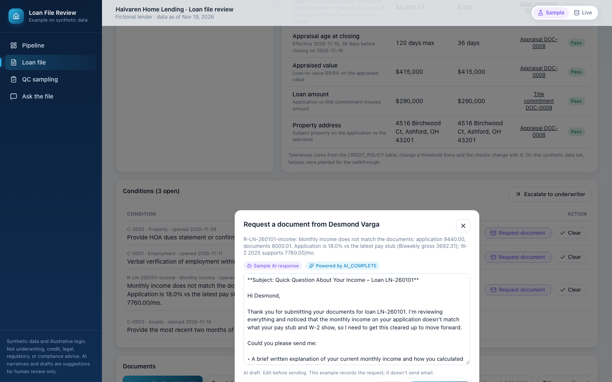
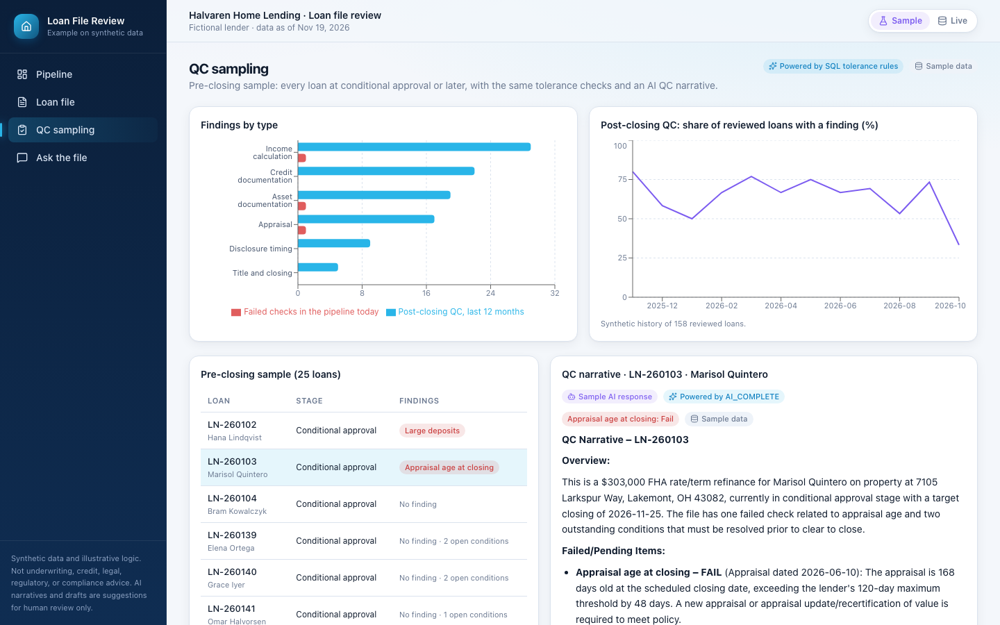

Verify every loan file against its application, and clear conditions faster
A mortgage file arrives as a stack of PDFs: the application, pay stubs, W-2s, bank statements, an appraisal, a title commitment and a closing disclosure. A processor has to read each one, compare it with what the borrower stated, chase what doesn't match and clear conditions before closing. This example reads every document as it lands, extracts the fields with confidence scores, checks them against the application with tolerance rules from a credit policy table, and shows each mismatch beside the document it came from. The processor stays in charge: clear a condition, ask the borrower for a document with an AI-drafted message, or escalate to an underwriter.
Synthetic data, illustrative logic. Every borrower, employer, bank, appraiser and title company is fictional. This is not underwriting, credit, legal, regulatory or compliance advice, and it isn't a production system. The tolerances are illustrative, not a credit policy, and AI drafts and narratives are suggestions for a person to review.
Who it's for
Loan processors
A pipeline of files by stage with open conditions and days to close, and a loan file showing what's missing, what doesn't match, and where each number came from.
Underwriters
Escalated files with the application and document values side by side, and questions about the file answered with citations.
QC reviewers
A pre-closing sample with the same checks, findings by type against twelve months of post-closing QC, and an AI QC narrative per loan.
Walkthrough
Screenshots of the app in no-account mode. Its data and AI text were captured from the live pipeline on the same synthetic documents. The four story loans are planted on this synthetic data set.







How it works
Each capability below ran in live mode on a Snowflake account in AWS US East 1 in November 2026.
| Step | Snowflake capability | What it does here |
|---|---|---|
| Intake | Stage, directory table, stream and task | New files on the stage are queued by a stream; a task calls one procedure whenever the stream has data. |
| Read | AI_PARSE_DOCUMENT | OCR and layout for every PDF, including the pay stub and bank statement tables. |
| Classify | AI_CLASSIFY | Names the document type. It agreed with the generator's label on all 512 documents in our run. |
| Extract | AI_EXTRACT | Pulls the fields for each of seven document types with a confidence score per field, and the deposits table from bank statements. |
| Verify | SQL views and a CREDIT_POLICY table | Eight checks of application vs documents: income, employer, borrower name, large deposits, appraisal age, appraised value, loan amount and property address. Failures open a condition automatically. |
| QC narrative and borrower messages | AI_COMPLETE | Writes a QC narrative per loan from its fact sheet, and drafts a borrower email for any open condition. |
| Ask the file | Cortex Search and AI_COMPLETE | Searches one loan's documents and conditions, then answers with numbered citations. |
| Decisions | Table writes from the app | Clear, request document and escalate actions are stored with who made them and when. |
Get started
No account
Open the hosted example, or run it locally with Node.js 20.19 or later:
git clone https://github.com/sfc-gh-ooral/sfguide-loan-file-review.git
cd sfguide-loan-file-review
npm install
npm run devAI answers in this mode are captured from the live pipeline and labeled Sample AI response.
Your Snowflake account
- Run
sql/setup.sqlin a Snowsight worksheet. It creates a dedicated database, an XSMALL warehouse and a least-privilege role, loads the synthetic files from the repository, and runs the pipeline once. - Register a key pair for your user and copy
.env.exampleto.env.local. - Run
npm run devand switch to Live. Each AI call shows its measured latency. - When you're done, run
sql/cleanup.sql.
Cortex AI functions and Cortex Search must be available in your region or through cross-region inference. The README lists every object created, the cost, and the full steps.
Customize with Cortex Code
- "Add my document types and extraction fields, and test them on 10 sample files."
- "Change the income tolerance rules to match my credit policy and show the affected loans."
- "Export QC findings in my investor reporting format."
Limits and disclaimer
- Verified income uses the latest pay stub for a single salaried borrower; there are no co-borrowers, hourly, bonus or self-employment income.
- The checks are simple tolerance rules for illustration, not agency or investor guidelines.
- AI_EXTRACT confidence for appraisal fields was lower (around 60%) on these synthetic one-page summaries; the app shows the score so people can review those fields.
- Requesting a document records the request and the drafted message; the example doesn't send email.
- Costs and latency depend on your account, region and model.
This is an illustrative example provided as is. It is not an official Snowflake product, it isn't supported by Snowflake Support, and it contains no customer data. Apache 2.0 license.